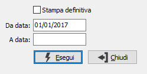

Stampa giornale
Premesso che il prospetto fiscalmente previsto per le aziende tenute alla contabilità fiscale di magazzino è costituito dalle Schede fiscali e non da questo prospetto, il programma effettua la stampa in ordine cronologico dei movimenti di magazzino, sulla falsariga di quanto avviene con il giornale di contabilità generale.
È prevista sia la stampa di prova che la stampa definitiva. La stampa definitiva aggiorna lo stato del movimento in modo che non possa essere ristampato nelle successive stampe del registro. Dopo la stampa definitiva di un movimento non ne è più consentita la variazione o la cancellazione.

STAMPA DEFINITIVA: check box. Valori ammessi: vuoto = elaborazione di prova; spunta = elaborazione definitiva.
DA DATA: inserire il limite dal quale si desidera iniziare la stampa. Se si conferma a vuoto la tabella dei movimenti di magazzino viene scandito dall'inizio.
A DATA: inserire il limite al quale si desidera terminare la stampa. Se si conferma a vuoto la tabella dei movimenti di magazzino viene scandito alla fine.